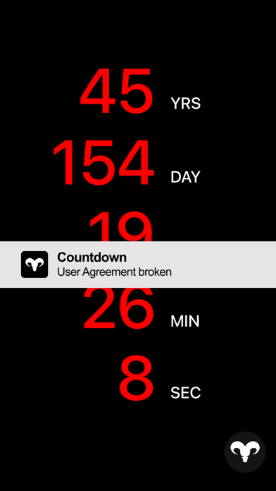

Countdown App 新手五分钟上手——从零到玩明白这款"死亡倒计时"整蛊神器
第一次接触 Countdown App？别被名字吓到。这篇手把手带你从下载安装到玩懂它的声光震三件套，三分钟摸清它到底是工具还是玩具。
如果你刚听说 Countdown App 就被"死亡倒计时"这四个字吓跑了，那你跟我当初的反应一模一样。这篇文章能带你从完全不懂到用起来——不需要任何基础，只要你有一台能装 App 的手机。
它到底是干嘛的？一个生活化类比讲明白
想象一下：你去游乐园坐过山车，排队的时候紧张得手心出汗，真正坐上去之后发现它就是个刺激项目——会让你尖叫、让你心跳加速，但下来之后你只会笑着说"再来一次"。
Countdown App 就是手机上的"过山车模拟器"。它表面上是一个"还剩 XX 天 XX 时 XX 分 XX 秒"的倒计时器，但跟市面上所有正经倒计时工具不一样：它不会让你自己设一个目标日期——比如考研倒计时、生日倒计时、旅行倒计时。打开它的那一刻，数字就已经在跳了，而且是随机给你的。
黑底白字，五组大号数字，安静地一秒一秒往下掉。背景是低沉的摇篮曲，背面闪光灯跟着节奏一开一合。你盯着屏幕会有一种奇怪的紧张感，好像这串数字真的意味着什么。但其实开发者从始至终都在说：这就是个娱乐玩具，别当真。
它起源于 2019 年的恐怖电影《倒忌时》——电影里就有这么一款"死亡倒计时" App，主角打开后看到自己只剩几天时间，整个故事围绕这个设定展开。电影火了之后，独立开发者 Ryan Boyling 花了不到一个月把电影里那台 App 照着做了出来，上线不到两周——它的countdownapp官网至今还留着这次冲顶的纪念——就冲顶了 App Store 美国区免费榜，把 TikTok 和 YouTube 都压在了下面。
五分钟上手：从下载安装到第一次跑通
好消息是，Countdown App 的安装和使用比任何一款正经 App 都简单——因为它根本没什么功能。
第一步：下载安装。安装包从官方下载拿或者直接去手机应用商店搜 "Countdown" 都能找到它——图标是一个黑底白色的羊头骷髅，很好认。Android 用户注意了：这货需要 Google 服务框架（GMS）才能跑，没有 GMS 的手机装上可能会闪退。iOS 用户没这个问题，直接装就行。安装包不大，几十秒搞定。
第二步：打开它。首次打开会弹出一个免责声明，大意是"这就是个娱乐玩具，别当真，光敏性癫痫患者别用"——开发者把这个声明在商店页、应用内、归零弹窗里重复了三次，可见他有多怕有人出事。看完点同意，你就会进入主界面。
第三步：看数字跳。主界面没有任何按钮、没有任何菜单、没有任何设置。就五组数字——年、天、时、分、秒——在你眼前安静地一秒一秒往下掉。背景是低沉的摇篮曲，背面闪光灯跟着节奏闪。你唯一能做的事就是盯着它看。
这就是全部了。没有什么"开始倒计时"按钮，没有什么"设置目标日期"的输入框，没有登录注册，没有广告弹窗（早期版本没有，后期版本加了）。打开 → 看数字跳 → 关掉。完事儿。
是不是觉得太简单了？别急，精彩的在后面。
上手后先玩这三个功能
虽然 Countdown App 没有正经功能，但它有三个值得你先"玩"一下的点——每个都配了开发者精心设计的声光震效果。
第一个：等归零时刻的"高潮演出"。等数字跳到 0000 年 00 天 00 时 00 分 01 秒的下一秒，就是归零时刻。这时候会发生一连串剧烈的声光震变化：数字从平滑滚动变成剧烈抖动，几乎看不清；音效从摇篮曲瞬间拉满到最高音量，叠加警报器高频音；闪光灯从每秒 1-2 次飙升到每秒 5-8 次；震动从周期性轻震变成持续高频震动。所有效果同时维持 3-5 秒，然后突然全部切断——屏幕从闪白变成静止的纯黑，音效从拉满变成完全死寂，一切恢复平静，好像什么都没发生过。
开发者自己说过，这个归零演出的节奏设计跟电影里主角"死亡瞬间"的镜头剪辑一模一样——推向高潮，然后突然归于寂静。你完全可以看完演出之后继续挂着 App，或者重启它继续倒计时（重启后数值还是 0，不会重新随机生成）。对声光震三件套想挖得更深的，去countdownapp文档里看，每段音效频率、闪光灯节奏都有拆解。

第二个：把它放朋友手机上整蛊。这是这款 App 最流行的用法。找机会（比如借朋友手机查个东西）悄悄装上去，调个看起来不多不少的天数（比如 3 天、5 天），然后装作不经意地把手机还给他。朋友打开屏幕看到这串数字的反应——"卧槽这什么玩意儿"——就是你要的效果。注意别给心脏不好的朋友玩，玩笑要有个度。
第三个：让它后台挂着，感受"存在感"。Countdown App 支持后台运行，你切出去用别的 App，它在后台继续跳。偶尔切回来瞄一眼，那串数字又少了几个，配合背景音和闪光灯，有一种微妙的"它在默默跟着你"的氛围感。开发者还做了随机通知功能——叫 Ozhin 的东西会不定时给你发消息，比如"倒计时继续中"之类的，进一步强化这种存在感。
小白的三个常见疑问
疑问一：我能改成自己的目标日期吗？比如考研倒计时、生日倒计时？
不能。这是 Countdown App 和所有正经倒计时工具最本质的区别。开发者从始至终没打算让它"好用"——他就是想让你面对一个不受你控制的、随机跳的数字。如果你想设自己的目标日期，有大把正经倒计时工具可选，这款不是给你用的。
疑问二：手机存储空间不够装不下怎么办？
iOS 版商店下载包约 184MB，安装后占用约 220MB；Android 版当前商店版约 165MB，安装后再加 50MB 左右。有个小技巧：Android v19 版本比当前商店版小很多（APK 只有 43MB），因为它还没加完整的通知素材和广告 SDK。只要你的手机有 GMS，v19 完全可以正常运行，核心玩法不受影响。
疑问三：闪光灯一直闪会不会伤手机？能关掉吗？
开发者没做软件层的闪光灯开关——他就不想让你关。想关的话只能靠系统层面：iOS 用户进设置 → 辅助功能 → 音频/视觉 → 关闭"闪烁的 LED"（这个会同时关闭通知闪烁）；Android 用户试试先开相机把闪光灯关掉，Countdown App 可能会继承关闭状态；最简单粗暴的办法：用个不透明的东西把背面挡住就行。开发者在安全声明里专门提醒了光敏性癫痫患者别用，这个警告不是开玩笑的。
写在最后
Countdown App 不是一款"工具"——它没有帮你完成任何实际任务的能力。它更像一个玩具，或者说一个社交道具：看电影的时候代入感、朋友聚会的时候整蛊、拍短视频的时候当素材。开发者自己也知道评分上不去（Chrome Stats 上只有 2.32 星，差评里最多的就是"什么玩意儿我想数考研倒计时它给我随机一个"），但他说"我就是这个样子，有人喜欢有人骂我都接受"。
如果你玩完觉得"不过如此"，那说明你不是它的目标用户——这很正常。但如果你盯着那串跳动的数字愣了三秒钟，心里飘过一丝"还剩这么点了？"的紧张感，那这款 App 的目的就达到了。玩够了随时删掉，它不会在你手机里留下任何痕迹。
想深入了解的话，完整的声光震机制详解、各个版本的差异对比，以及开发者那档解释归零设计思路的播客转录都已经整理好了。这款 App 虽小，背后的设计心思还真不少。
顺手说一句，这套整理资料在三个常用仓库都能拿到——GitHub 主库之外，Gitee 镜像和GitCode 备份各有一份，国内访问哪个快用哪个。